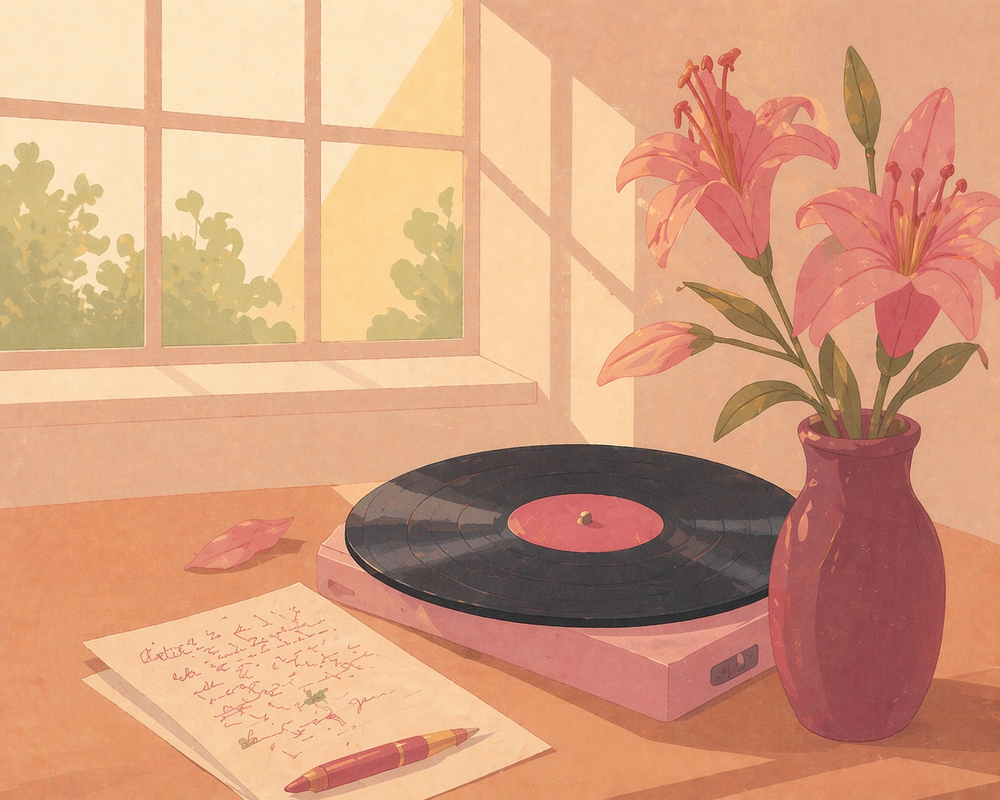

Attach a private message to any Spotify song — at a specific second, or the very first note. Share a song-letter with one quiet link.
Download for Chrome
Pin a private message to any track. Arrives exactly when you choose.
The note fades in at the second you chose. The chorus, the drop, the silence before.
Group notes across multiple songs and share them with one quiet link.